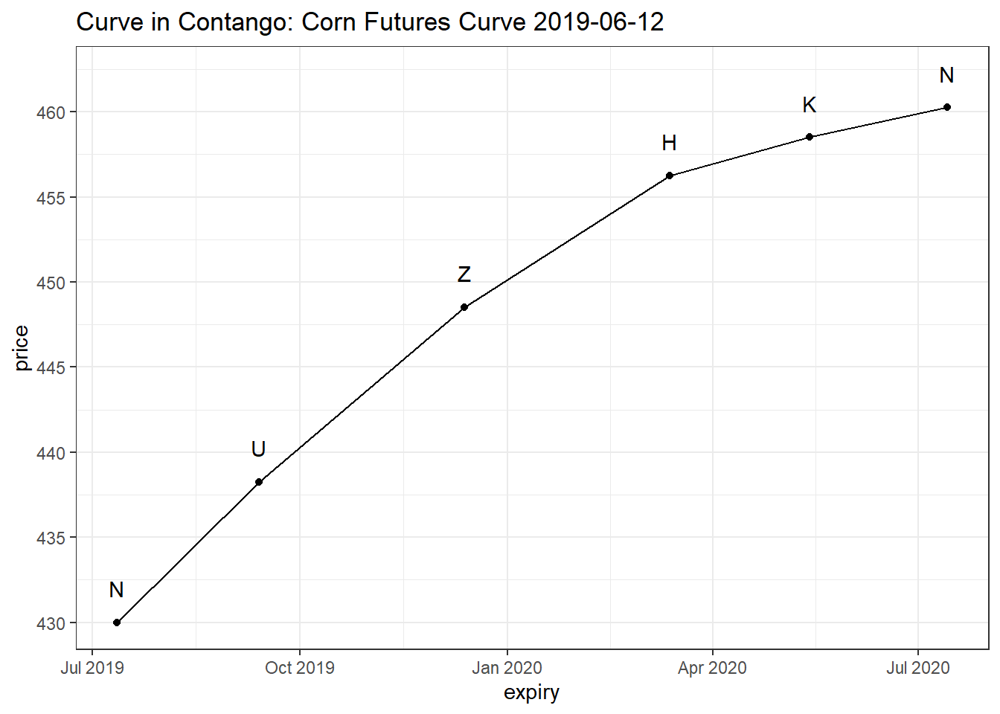
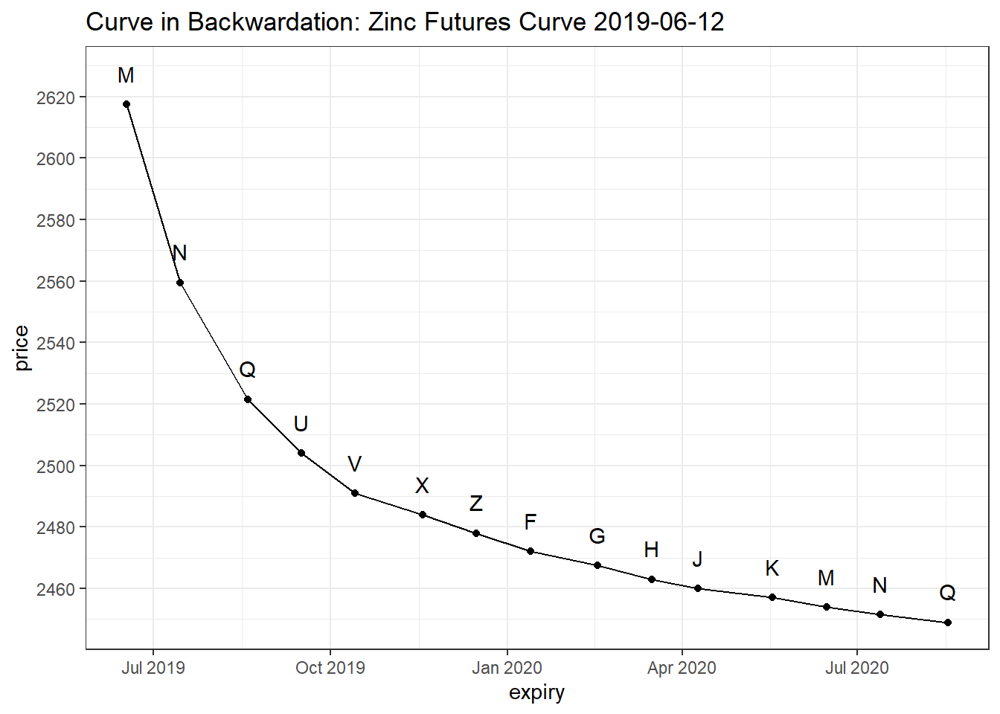
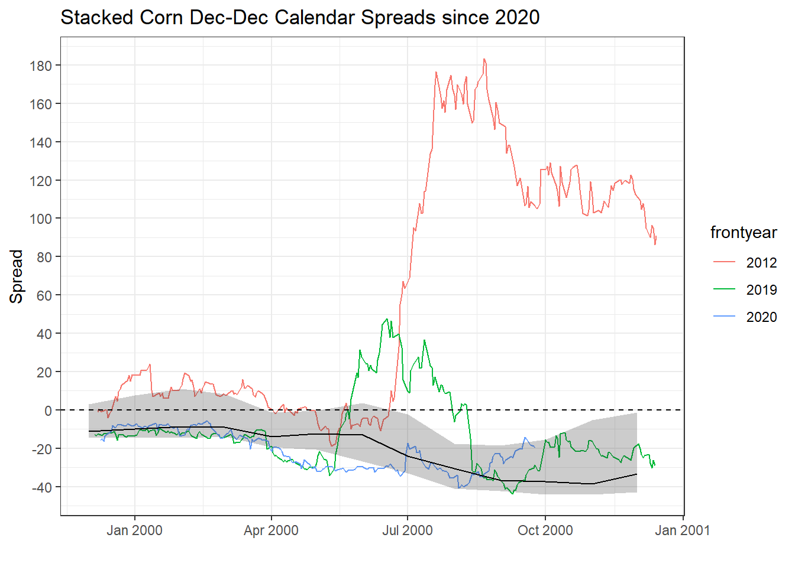

Section 2 Calendar Spreads
2.1 Introduction
One of our main flavours of relative value commodity alpha we like to harvest is to express our views using calendar spreads. This is where we take opposing views on different parts of the futures curve of a single commodity. This can be done in two ways
- Bull spreads: long the near dated and short the far dated contract
- Bear Spreads : long the far dated and short the near dated
2.2 Curve Shapes
There are two basic futures curve shapes
Contango When the near dated contracts are trading at a discount compared to the far dated contracts
Backwardation When the near dated contracts are trading at a premium compared to the far dated contracts
In the plots below we show example of what each case look like. On the y-axis we show the price of each of the contracts. The x-axis shows the expiration dates associated with each of the contracts. The codes at each point represent the standard market codes for the different maturities.


Commodity futures curves are divided by obstacles to intertemporal arbitrage. The costlier the storage, the greater is the division and the variability of calendar spread moves. The segmented commodity futures curve is shaped by four factors:
- Funding and storage costs,
- Expected supply and demand imbalanced,
- Convenience yields and
- Hedging pressure.
Under normal conditions commodity producers take short futures positions in the deferred parts fo the commodity futures curve in order to hedge against price drops. The investor or speculator that offers this insurance is paid a premium and takes a long position in the futures contract. This positive premium comes in the form of the carry premium. On the other hand, commodity consumers take long futures positions in nearer dated contracts in order to hedge against unexpected future price surges. The investor or speculator that offers this insurance receives a premium for taking up the risk and takes a short position, in which case contango arises.
When commodity stocks are in abundance the funding and storage costs can become high which forces the futures curve more contango. There is a maximum degree of contango the futures curve can have, given by full carry. The level of full carry depends on interest rates. For this reason we include Libor rates as part of our macro-economic indicators.
2.3 Notation
We define the value of a calendar spread as
\[ S_{ij} = P_i - P_j, \text{with } j > i. \] Here \(P_i\) and \(P_j\) represent the prices of contracts \(i\) and \(j\) respectively. Moreover, contract \(j\) expires after contract \(i\). In words, calendar spreads are calculated as the difference between the near and far dated futures contracts. A negative spread implies the near dated contract is trading at a discount compared to the far dated contract, i.e. contango. Similarly, a positive spread implies that the near dated contract is trading at a premium with respect to the far dated contract, i.e. backwardation.
2.4 Example
Below we consider an example of the Corn ZZ, or December-December calendar spread. On the y-axis we show the value of the spread and on the x-axis the stacked date. Note that the actual values of the years make no difference here. The point is to visualise the seasonal pattern that emerges.

We highlight three years. The first is 2012, here shown in red. This year saw a massive drought in the United States which destroyed the production and forced the curve into a severe backwardation. The green curve shows how the spread evolved during 2019 and the blue curve represents the current spread. The solid black line represents the monthly median while the shaded region shows the 25th to 75th percentile. Half of the historical data lies within the shaded region. The horizontal dashed line is there to help distinguish between backwardation (\(S > 0\)) and contango (\(S < 0\)).
2.5 Different Calendar Spread Combinations
The Corn futures market has five different codes within each year
- H
- K
- N
- U
- Z
This implies that that are 25 different calendar spread combinations we can create using only the corn futures market. The table below shows all the different calendar combinations we can create.
| H | K | N | U | Z | |
|---|---|---|---|---|---|
| H | HH | HK | HN | HU | HZ |
| K | KH | KK | KN | KU | KZ |
| N | NH | NK | NN | NU | NZ |
| U | UH | UK | UN | UU | UZ |
| Z | ZH | ZK | ZN | ZU | ZZ |
The table above highlights the extent of the different instruments available to trade when we want to express a view on Corn. The same applies to all the other commodities we cover.